비서-1급 (2014-05-25 기출문제)
1과목: 비서실무
1. 아래는 M주식회사 회장 주최로 개최될 국제포럼의 첫날 일정초안이다. 다음 중 이 내용을 토대로 회장 비서 오은하씨가 취한 행동으로 가장 적절한 것은?
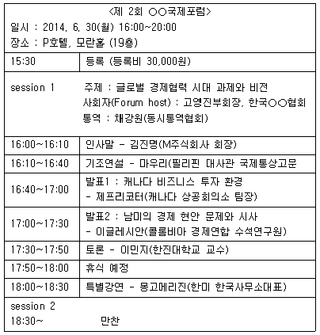
- 포럼의 홍보를 위해 주요내용 등을 담은 보도자료는 포럼 일정이 끝난 후 작성해서 배부한다.
- 현재 일정으로는 중간에 휴식시간이 더 필요한 것 같아 영문 초청장 초안을 발표자와 토론자에게 이메일로 발송 한 후 의견을 조율하여 초청장에 최종 삽입하기로 하였다.
- 만찬에서의 좌석 위치를 정하기 위해서 참석자의 직급, 기관 순위, 전직과 연령 등을 미리 조사하여 이를 토대로 서열을 구분해 두었다.
- 한국, 캐나다, 콜롬비아, 미국 4개국이 참여하므로 단상에서의 국기게양은 태극기를 중앙으로 해서 좌우로 국가 영문명의 알파벳 순서로 위치하도록 준비시켰다.
(정답률: 78%)

2. 최근 K회사의 주가가 급락하고 있는 상황에서 비서실로 주주들의 전화가 빗발치고 있다. 이때 비서의 전화응대로 가장 적절한 것은?
- 주주의 알 권리를 충족시켜드리기 위해 주가가 급락하고 있는 이유에 대해 자신이 알고 있는 정보를 최대한 설명해드린다.
- 주주는 회사를 둘러싼 이해관계자들 중에 가장 중요한 존재이므로 전화가 올 때마다 상사와 바로 연결해드린다.
- 불만 주주들의 의견을 들은 후 주식담당자에게 전화를 돌려드린다.
- 관련 전화가 너무 많이 올 경우, 업무손실을 막기 위해 본인 담당업무가 아니라는 것을 공손하게 말한 후 전화를 끊는다.
(정답률: 66%)
3. 회의 중인 사장님께 GT사의 최사장님께서 부산 공장 매입건으로 급히 통화를 원하셔서 회의실에 메모를 넣기로 하였다. 다음 작성된 메모 중 가장 적절한 것은?
- 최사장님께서 급히 통화를 원하십니다. 통화 가능하십니까?
- 사장님,'부산공장 부지 매각'건으로 GT사 사장님께서 전화하셨습니다. 꼭 받으셔야 할 것 같습니다.
- 최사장님이'부산공장 부지 매입 건'으로 전화하셨는데 회의실로 지금 연결하겠습니다.
- 사장님, GT사의 최사장님께서'부산공장 부지 매입 건' 으로 급히 통화 원하십니다. 지금 받으시겠습니까?
(정답률: 80%)
4. 사장비서 이승호는 사내 비서 교육 담당자로서 비서업무 매뉴얼을 교재로 활용할 계획이다. 다음 중 업무매뉴얼의 내용으로 가장 적절하지 못한 것은?
- 임원들의 여권 사본, 운전면허증 사본
- 임원실 및 비서실 비품 목록
- 조직도 및 회사 빌딩 층별 배치도
- 회사 주요 연락처, 회사 인근 식당 리스트
(정답률: 75%)
5. 비서업무 처리에 관한 다음 사항 중 가장 적절한 것은?
- 상사가 지시하지 않은 업무라도 비서에게 주어진 권한 내에서라면 일을 판단하고 수행한다.
- 상사에게 자주 전화하는 사람들이 전화를 하더라도 실수가 없도록 성함은 언제나 묻고 확인하도록 한다.
- 상사의 지시사항은 그동안의 비서의 경험을 토대로 판단한다.
- 결재는 별다른 이유가 없다면 직책에 우선하여 처리한다.
(정답률: 50%)
6. 대한건설 노승재 사장은 다음 주 미국 뉴욕으로 해외출장을 떠날 예정이다. 노 사장은 김미정 비서에게 요즘 휴대전화 해외로밍 피해가 심각하다는 뉴스를 봤는데 미리 피해를 입지 않도록 조치를 취해달라고 지시하셨다. 김 비서가 할 수 있는 업무로 가장 거리가 먼 것은?
- 스마트폰의 환경설정 메뉴에서 데이터로밍을 차단(비활성화)하여 해외 데이터로밍을 미리 차단한다.
- 상사의 이동통신 사업자에 무료 데이터로밍 차단서비스를 신청하여 데이터 요금 발생을 원천적으로 차단한다.
- 상사가 휴대전화로 데이터검색을 많이 사용하기 때문에 데이터로밍 무제한 요금제에 가입한다.
- 데이터로밍 차단 시 WiFi는 사용이 안 되기 때문에 비용이 들더라도 데이터로밍을 활성화(비차단)하여 업무에 지장을 주지 않도록 한다.
(정답률: 56%)
7. 상공실업 강우성 사장이 해외출장 중 휴대전화로 거래처에 문서를 작성하여 보내라는 업무지시를 내렸다. 한소정 비서가 강 사장의 업무지시를 받고 이를 수행하는 태도로서 가장 적절한 것은?
- 통화상태가 좋지 않아 잘 들리지 않는 부분이 많아 메모에 표시해 두었다가 통화가 끝난 후 문자 메시지로 문의 드렸다.
- 상사가 다음 스케줄로 바빠서 지시내용의 일부는 상사의 기존 업무 방식대로 처리하였다.
- 지시한 내용에 대한 처리 상황을 그때그때 전화 드려 상세히 보고 드렸다.
- 지시 받은 업무가 현재 업무의 진행 상태로 보아 바로 시작하기 어렵다고 판단되어 솔직하게 설명 드렸다.
(정답률: 25%)
8. 현대 사회에서 비서에게 요구되는 자질과 능력은 다양하다. 전문비서에게 필요한 자질과 능력에 대한 설명으로 가장 적절치 않은 것은?
- 민첩성과 침착성 : 필요와 우선순위에 따라 즉시 정보를 제공하거나 사무 처리를 한다.
- 판단력 : 손님과 면담 중에 예정에 없던 긴급회의가 소집되었다면 손님에게는 정중히 사정을 설명하고 다음 만남을 중재하도록 하며, 상사는 신속히 회의에 참석할 수 있도록 한다.
- 적응력 : 새로운 컴퓨터 시스템이 도입되었을 때 개방적인 마음자세를 가지고 훈련 프로그램에 적극적으로 참여한다.
- 책임감 : 상사의 직접적인 감독 하에, 항상 완벽하게 일을 처리할 수 있도록 한다.
(정답률: 60%)
9. 최비서는 올해 회사 송년회 개최를 위한 장소 선정을 담당하라는 상사의 지시를 받았다. 장소선정 고려요소로서 그 영향력이 가장 낮은 것끼리 묶인 것은?
- 예산규모 - 예상참석인원수
- 송년회 프로그램 내용 - 장소의 과거이용경험
- 회사와의 근접성 - 행사 협찬사의 지원여부
- 제공되는 만찬메뉴의 질 - 장소의 이용가능시간 정도
(정답률: 51%)
10. 조직체 내에는 공식조직과 비공식조직이 함께 존재하며, 특히 비서에게는 조직의 비공식적인 측면을 잘 이해하고 파악함으로써 얻을 수 있는 이점이 있다. 이러한 비공식 조직에 대한 설명으로 가장 적절한 것은?
- 가능한 다양한 비공식 조직에 속해 조직 내 의사소통의 흐름에 대처하도록 한다.
- 상사의 비공식 조직은 업무에 활용될 수 있는 정보를 얻을 수 있으므로 상사와 정보를 공유한다.
- 자신이 인식하지 못하는 사이 직무상 기밀이 누설되지 않도록 각별히 유의한다.
- 상사와 비공식 조직에서 친분이 있는 사람들과 정기적인 모임을 주선하거나 안부를 전한다.
(정답률: 63%)
11. 상진식품유통회사 사장의 출장 일정이 캘리포니아의 샌프란시스코에 6월 셋째 주 기간에 4박5일로 결정되었다. 사장 비서인 문지혜양이 사장의 출장 준비를 위해 한 행동으로 가장 적절하지 않은 것은?
- 출장지에서 스마트폰 사용 시 과다한 데이터요금을 줄이기 위해 출국하기 전 무제한 데이터로밍 서비스를 신청하도록 하였다.
- 사장님의 취향을 고려하여 평상 시 선호하는 특급호텔 디럭스룸으로 예약을 해 두었다.
- 비자가 필요 없으므로 6월 둘째 주 경에 ESTA에 승인받은 내역을 출력해 두었다.
- 상사의 경비 지출을 안전하게 관리하기 위해 상사 법인카드 번호를 적어두고 보관 하였다.
(정답률: 45%)
12. 다음 중 행사 초청장 작성 및 발송 업무에 대한 설명으로 가장 적절치 않은 것은?
- 날짜가 촉박하여 전화로 초청사실을 미리 알리고 나중에 초청장을 보낼 경우 R.S.V.P. 대신 To remind라고 표기한다.
- 초청장을 직장이나 인편으로 직접 전달할 경우에는 초청 대상자가 맡고 있는 공식적 직위와 성명을 모두 표기 하도록 한다.
- 초청장의 약어 사용은 Mr., Mrs., R.S.V.P. 외에도 필요한 경우 사용 가능하다.
- 복장 표시는 초청장의 우측 하단에 표기하도록 한다.
(정답률: 27%)
13. 해외 금융사 한국지사장의 비서로 근무하는 김민정 비서는 미국인 상사를 보좌하고 있다. 김 비서가 상사를 보좌할 때 올바른 업무 수행 방법으로 가장 적절치 않은 것은?
- 외국인 상사는 간결한 보고를 좋아하므로 최소한의 커뮤니케이션으로 의사전달을 하도록 한다.
- 대화 시 거의 대등한 분위기에서 의견교환이 이루어지며, Yes 또는 No의 분명한 답변을 원하므로 의견을 분명하게 나타낸다.
- 한국적 상황에 대해 비서가 사소한 업무도 일일이 배려하여 설명해 주어야 한다.
- 상사가 비서를 동반자로 인식하여 의견을 많이 묻고 참고하는 경향이 있으므로, 정확한 정보를 제공할 수 있도록 한다.
(정답률: 49%)
14. 상사가 해외 출장 시 이용할 차량을 온라인으로 직접 예약하려고 한다. 비서가 예약하는 과정에서 확인하여야 할 정보의 내용으로 짝지어진 것 중 중요도가 가장 낮은 것은?
- 지불조건 - 임차도시
- 주행거리 제한여부 - 차량모델
- 연소 운전자 보상 범위 - 운전기사 포함 임차여부
- 차량 인수 및 반환 시각 - 비용에 포함되어 있는 보험의 내용
(정답률: 51%)
15. Mr. Smith가 사장실로 들어온 후 신비서가 손님을 맞이 하는 응대방법으로 가장 적절한 것은?(15번 공통지문 문제)
- 손님의 문화적 배경을 파악하여 알맞게 대응한다.
- 인사는 공손하게 허리를 숙여 절하는 형태를 취한다.
- 지난번에 방문한 적이 있던 손님이어서 친근하게 John 이라고 부른다.
- 먼저 반갑게 악수를 청해 인사를 한다.
(정답률: 70%)
16. 서정민 비서는 10년차 비서로서 회의 및 이벤트를 기획하고 진행하는 국제회의 관련 기업인 인터엑스사의 대표이사 비서로 일하고 있다. 국제회의 관련업계 종사자로서 알아야 할 다음의 테이블 매너 중 옳은 것은?
- 테이블에 음식을 흘리면 얼른 냅킨으로 닦아 상대방에게 피해를 주지 않도록 한다.
- Corkage fee는 예약할 때 얼마인지를 확인한 후 결정한다.
- 직급이나 연령이 높은 사람이 와인을 따라 줄 때는 공손히 잔을 들어서 받는다.
- 애피타이저로 나온 구운 빵은 포크를 사용하여 먹는다.
(정답률: 51%)
17. 아래의 부고장 관련 용어로 밑줄 친 부분이 바르게 표기된 한자로 짝지어진 것은?
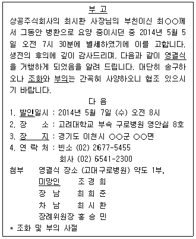
- 發靷-訃告
- 永訣式-壯紙
- 造花-未亡人
- 附議-訃告
(정답률: 28%)
18. 비서 황미희는 새로운 회사 홍보자료를 제작하기 위한 업체를 물색·보고하라는 지시를 받았다. 관련 업무를 추진하기 위해 황비서가 수행할 수 있는 준비업무로 우선순위가 가장 낮은 것은?
- 자사 경쟁업체의 홍보자료를 수집하고 그 자료제작의 대행업체들을 파악하여 보고한다.
- 국내 유명 홍보업체들의 명단을 작성하여 그들의 대표 수행과제들을 정리·보고한다.
- 사내 임원의 지인 추천과 소개를 기반으로 한 홍보업체 목록을 작성한다.
- 현재까지 이용했던 홍보자료에 대한 피드백을 수집해본 후 후보업체들을 선별해 본다.
(정답률: 54%)
19. 비서 강미혜는 고문 보좌를 계속 하면서 새로운 대표이사의 비서를 맡게 되었다. 이에 대한 강미혜의 처신으로 가장 올바른 것은?
- 두 분의 업무요청이 동시에 발생할 경우 현재 고문의 지시를 우선적으로 처리하도록 한다.
- 업무내용의 중요도와 시급성에 따라 이행의 순서를 판단하되 대표이사 업무에 비중을 두도록 한다.
- 새로운 대표이사의 보좌업무가 증대됨에 따라 고문 보좌비서의 증원을 요청한다.
- 현 고문이 개인적인 사업계획 중이며 강미혜에게 참여를 요청한다면 당연히 고문의 제안에 따라야 한다.
(정답률: 49%)
2과목: 경영일반
20. 다음 중 큐레이션 서비스의 일종으로 매달 구독료를 지불하고 전문가들이 선정한 좋은 제품을 받아보는 서비스를 나타내는 용어로 가장 적절한 것은?
- 서브스크립션 커머스
- 버티컬 커머스
- N스크린 서비스
- 바이럴 마케팅
(정답률: 61%)
21. 다음 중 재무제표에 대한 설명으로 가장 적절하지 않은 것은?
- 재무상태표로 기업의 영업활동에 사용되는 자산, 부채, 자본 등이 어떻게 구성되었는지를 검토할 수 있다.
- 손익계산서는 일정 시점의 기업의 경영상태를 나타내는 표로서 비용 측면에서 나타낸다.
- 현금흐름표는 일정기간동안 기업의 현금 유입과 유출을 영업활동, 투자활동, 재무활동으로 나타낸다.
- 재무제표는 조직내외에서 발생한 조직의 각종 거래행위를 화폐가치로 나타낸 여러 가지 표를 말한다.
(정답률: 53%)
22. 다음 중 e-비즈니스 환경에서 기업이 기대할 수 있는 공급망관리(SCM)의 효과로 가장 관계가 적은 것은?
- 시장의 수요변화에 대한 신속하고 경제적인 대응 가능
- 고품질 제품의 제조 및 판매 가능
- 물류비용의 최소화
- 신규 사업의 기회 발견
(정답률: 55%)
23. 다음 중 기업에서 시행하는 임금관리에 대한 설명으로 가장 적절한 것은?
- 임금수준을 결정할 때 종업원의 생계비는 임금의 하한선 기준이 되고 기업의 지급능력은 임금의 상한선 기준이 된다.
- 직무급은 직무의 절대적 가치평가에 따라 임금을 결정하는 형태이다.
- 스캔론 플랜(Scanlon plan)은 부가가치와 생산성 향상분을 성과배분의 기준으로 삼는 제도로 집단 능률을 자극하는 방법이다.
- 직능급은 연공급을 기초로 개인의 능력차를 고려하여 임금을 지급하는 방법이다.
(정답률: 41%)
24. 경영자가 어떻게 의사결정을 하느냐에 따라 조직의 효율성과 성과가 결정된다. 다음 중 의사결정의 여러 유형에 관한 설명으로 가장 적절한 것은?
- 사이몬(H.A.Simon)의 관리적 모델에 따르면 경영자는 현상이 목표와 이어질 수 있도록 최적의 대안을 선택하는 합리적인 의사결정을 한다.
- 앤소프(H.I.Ansoff)의 전략적 의사결정은 기업 내부 문제에 관한 결정으로 기업의 여러 자원을 조직화하는것과 관련된다.
- 앤소프(H.I.Ansoff)의 업무적 의사결정은 조직의 여러자원의 변환과정에서 효율성을 극대화하는 것과 관련된 의사결정으로 주로 하위 경영층에 의해 이루어진다.
- 불확실성의 조건하에서 경영자는 대안과 결과에 대한 부족한 정보에서 합리적인 의사결정이 어렵기 때문에 자신의 추측, 직관 등에 의존하여 의사결정을 할 수 밖에 없다.
(정답률: 27%)
25. 시장 환경의 변화에 대응하기 위해 사내벤처를 적극적으로 지원하는 기업이 늘고 있다. 다음 중 사내벤처에 대한 설명으로 가장 적절한 것은?
- 사내벤처는 내부자원을 활용하는 방법으로 관리가 용이하지만 내부 의사결정의 제약성 때문에 본업과 연관된 유사제품 개발이 제한될 수 있다.
- 기업이 다각적인 확대전략을 위해 사업내용을 재구축하는 과정으로 사내벤처를 도입할 수 있다.
- 사내벤처는 스핀오프를 통해 독립된 기업으로 운영되지만 기존 조직과의 상호적합성을 유지해야 한다.
- 사내벤처는 모기업과의 계약을 통해 가맹점 형태로 운영함으로써 모기업의 기존제품이나 서비스와 관련된다.
(정답률: 44%)
26. 최근 여러 대기업이 지배구조 개선을 위한 방법으로 지주회사 체제로 전환하고 있다. 다음 중 지주회사에 대한 설명으로 가장 적절하지 않은 것은?
- 지주회사가 소액자본으로 다수 기업을 지배하고 기업 집단을 형성함으로써 경제력 집중의 문제가 발생할 수 있다.
- 지주회사는 자회사의 부실이 다른 자회사로 전이되는 문제점이 적어 그룹 전체의 안전성을 제고할 수 있다.
- 혼합지주회사는 자체적인 수익사업을 하면서 자회사의 경영권을 지배하기 위해 이들의 주식을 보유한다.
- 지주회사는 순환출자구조를 통해 기업지배구조의 투명성을 확보할 수 있다.
(정답률: 28%)
27. 세계 경제가 글로벌화 시대를 맞이하면서 글로벌 경영에 대한 관심이 커지고 있다. 다음 중 기업의 해외진출방식에 관한 설명으로 가장 적절하지 않은 것은?
- 해외 직접투자는 해외관세 및 비관세 장벽의 문제를 극복하기 위해 현지화 수준을 높이는 방법이다.
- 프렌차이징은 라이센싱과 달리 소유권이 독립되어 있어서 가맹사 운영에 통제를 적게 받는다.
- 직접수출방식은 간접수출방식에 비해 시장개입의 범위를 확대할 수 있는 이점이 있다.
- 턴키프로젝트는 생산설비, 기술자, 노하우 등을 복합적 으로 이전하는 수출형태로 현지정부의 규제로 직접투자가 어려운 국가에 유용한 진입방식이다.
(정답률: 51%)
28. 기업의 경제적 환경은 기업의 일반환경 중에서 가장 중요한 위치를 차지하고 기업활동에 큰 영향을 미치고 있다. 다음 중 기업의 경제적 환경에 대한 설명으로 가장 적절하지 않은 것은?
- 지속적으로 국제수지 흑자를 나타낸다면 국내통화량이 증가하여 물가가 상승하는 부작용이 나타날 수 있다.
- 환율의 상승으로 화폐의 대외가치가 하락하지만 수출시장에서 기업의 경쟁력은 높아지게 된다.
- 인플레이션은 기업의 제품가격의 합리적 책정을 어렵게 하지만 기업의 수출경쟁력을 높일 수 있다는 장점이 있다.
- 정부의 재정금융정책의 일환으로 경기가 과열되면 과세표준을 상향조정하고 은행여신규모를 축소한다.
(정답률: 48%)
29. 다음 중 외국자본이 국내시장을 지배하는 현상을 가리키는 경제 용어로서 가장 적절한 것은?
- 윔블던 효과(Wimbledon Effect)
- 자산효과
- 전시효과
- 밴드왜건 효과(Bandwagon Effect)
(정답률: 62%)
30. 다음 중 기업의 업무를 외부에 맡기는 아웃소싱 조직 형태에 대한 설명으로 가장 적절하지 않은 것은?
- 기술의 발전과 새로운 시장의 등장에 따라 조직의 업무범위를 핵심적인 부분으로 제한하는 것이 가능해지고 있다.
- 설계부터 생산, 판매와 마케팅, 서비스까지의 모든 업무를 조직 내부에서 수행하는 것이 더욱 보편화되고 있다.
- 기업의 핵심적인 업무였던 생산까지도 외부에 맡기는 경우가 생겨나고 있다.
- 가치체인 상에서 전략적으로 중요한 단계에만 점점 더 집중하는 경향을 보이고 있다.
(정답률: 45%)
31. 대한기업이 생산하는 제품의 단위당 판매가격이 5만원, 단위당 변동비가 2만원, 총고정비가 600만원일 때, 다음 중 손익분기점(BEP) 매출량은 얼마인가?
- 200개
- 300개
- 400개
- 450개
(정답률: 50%)
32. 다음 중 기업이 사회적 책임을 다하는 것으로 보기에 가장 적절하지 않은 것은?
- 하청업체의 원재료나 부품에 대해 적정한 대가를 지급하여 중소기업도 함께 성장할 수 있도록 한다.
- 지역 발전과 환경 보호에 기업이 앞장선다.
- 소비자에게 낮은 가격의 상품을 공급하기 위해 인원을 감축하고 급여를 삭감한다.
- 기업 활동의 일환으로 지역주민이나 환경에 피해를 주었다면 이를 보상하고 해결하기 위해 적극적으로 노력한다.
(정답률: 78%)
33. 다음 중 이머징마켓에 대한 설명으로 가장 적절하지 않은 것은?
- 주로 금융시장 부문에서 새로 급성장하는 시장을 의미할 때 사용된다.
- 이머징마켓은 성장성이 높게 평가되고, 손실위험도 적기때문에 각별한 주목을 받는다.
- 개발도상국 가운데 상대적으로 경제성장률이 높고 산업화가 빨리 진전되고 있는 나라의 증시를 일컫는다.
- 이머징마켓을 평가함에 있어 경제 지표 및 언어 환경, 시장 환경, 투자관련 법령, 증시에서의 투자 여력 등 여러 요인을 종합적으로 고려하여 판단한다.
(정답률: 49%)
34. 다음 중 경영통제기법에 대한 설명으로 가장 적절하지 않은 것은?
- 내부감사제도란 내부 견제 제도를 보완하기 위하여 사용한다.
- 통계적 품질관리(SQC)란 대량생산방식에 의해 제조되는 제품관리에 일반적으로 많이 사용된다.
- 재고관리는 재고자산의 보유에서 발생하는 비용을 최소화 시킬 수 있도록 재고수준을 유지해 나가려는 관리통제 활동이다.
- 자료처리 시스템(DPS)은 경영정보 시스템(MIS)을 통해 도출된 경영정보를 활용하는데 사용된다.
(정답률: 43%)
35. 다음 중 벤처기업에 대한 설명으로 가장 옳지 않은 것은?
- 벤처기업의 유형 중 벤처캐피탈투자기업이란 벤처캐피탈 협회, 한국벤처투자조합, 신기술사업금융업자 등의 투자 총액이 자본금의 20% 이상인 기업을 말한다.
- 벤처기업의 유형 중 신기술개발기업이란 벤처기업평가기관에서 기술성과 사업성이 우수하다고 평가 받은 기업으로 동 사업의 매출액이 총매출액의 50%에 미달하는 기업을 말한다.
- 미국에서는 벤처 비즈니스에 대하여 HTSF, NTBF 등의 다양한 용어를 사용하고 있다.
- 고수익, 고위험이 있는 사업을 모두 벤처기업이라고 말하는 것은 아니다.
(정답률: 46%)
36. 다음 중 경영정보시스템(MIS)에 대한 설명으로 가장 옳지 않은 것은?
- 대부분의 조직은 공식적인 MIS로 인식되지는 않았다 할지라도 어떤 형태로든 경영정보시스템을 유지해 왔다.
- 경영정보시스템은 TPS(Transaction Processing System) - MIS(Management Information System) - DSS(Decision Support System) - ES(Expert System)로 발전하는 과정을 거쳤다.
- MIS(Management Information System)란 마이크로 컴퓨터가 보편화되면서 경영자가 스스로의 자료베이스를 만들어 놓은 다음 필요한 정보를 그때그때 조작해냄으로써 경영정보시스템 전문 부서로부터의 보고를 기다리지 않아도 될 수 있게 되었는데, 그러한 시스템을 MIS시스템이라고 부른다.
- ES(Expert System)란 다양한 경험이나 상황을 학습시키는 등 소위 인공지능을 이용한 새로운 시대의 정보시스템을 일컫는다.
(정답률: 35%)
37. 다음 중 리더십 이론에 대한 설명으로 가장 적절하지 않은 것은?
- 리더십은 일정한 상황에서 목표달성을 위해 개인이나 집단의 행위에 영향력을 행사하는 과정으로 정의된다.
- 리더십 유형에 대한 초기의 연구는 주로 정치지도자의 행동유형에 대한 것으로, 민주적·참가적 리더십, 전제적·권위적 리더십, 그리고 자유방임형 리더십으로 분류되었다.
- 자유방임형 리더는 자신의 권력이나 영향력을 거의 사용하지 않고 부하들에게 독립성과 행동의 자유를 부여하는 리더의 유형이다.
- 리더십 이론은 행위이론 → 상황이론 → 특성이론의 순으로 발전했다.
(정답률: 67%)
38. 마케팅 촉진(Promotion)관리 업무를 풀(Pull) 전략과 푸시(Push) 전략으로 구분할 때, 다음 중 푸시(Push) 전략에 해당하는 것은?
- 광고
- 홍보
- 소비자 판매촉진
- 인적판매
(정답률: 44%)
39. 다음 중 원재료나 부품 생산 업체를 인수 합병하여 해당업무를 직접 수행하는 경우의 장점으로 거리가 먼 것은?
- 경쟁을 통한 혁신과 동기 부여를 촉진할 수 있다.
- 안정적으로 원재료나 부품을 확보할 수 있다.
- 전체적인 효율성을 높이도록 시스템을 최적화하고 통제할 수 있다.
- 조정과 통제를 용이하게 하여 원가를 절감할 수 있다.
(정답률: 63%)
3과목: 사무영어
40. Choose one which has the least appropriate definition for the words underlined.
- If there is a discrepancy between two things that ought to be the same, there is a noticeable difference between them.
- When a group of people are unanimous, they all agree about something or all vote for the same thing.
- If something is evident, you notice it easily and clearly.
- Someone or something that is notable is tiny and small.
(정답률: 41%)
41. Read the following conversation, what will 'B' do first?
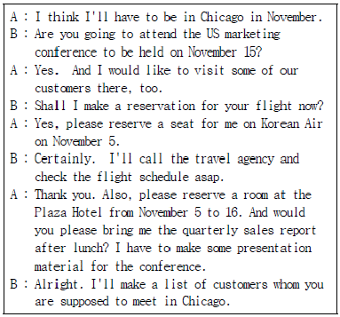
- Checking that the US marketing conference will be held on November 15.
- Calling the travel agency to book a flight to Chicago.
- Bringing the sales report for reference.
- Making an itinerary for her boss.
(정답률: 35%)
42. Which of the followings is the most appropriate for the blank?
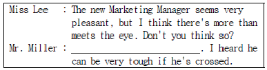
- That's out of the question.
- I can't make up my mind.
- I don't think so.
- I'm completely in favor of your idea.
(정답률: 35%)
43. Read below Q&A conversation and choose one that does not match each other.
- A : Where are you staying?
B : At the Michelangelo's. - A : How was the flight?
B : Fine, thank you. - A : Are you planning to stay here long?
B : Yes, I'm leaving tomorrow. - A : Can I get you something to drink?
B : Only if it's not too much trouble.
(정답률: 31%)
44. Read the following monolog and choose one what is true.
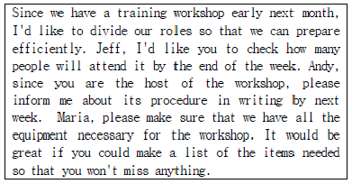
- They have a workshop early next week.
- Andy has to modify some steps in the workshop procedure.
- Maria is responsible for making a list.
- Jeff is responsible for checking the number of attendees.
(정답률: 40%)
45. Which of the following sets is the most appropriate for the above blanks ⓐ, ⓑ, ⓒ and ⓓ.
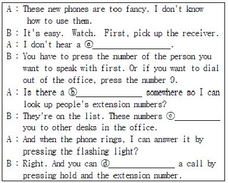
- ⓐ beep - ⓑ directory - ⓒ transfer - ⓓ connect
- ⓐ dial tone - ⓑ dictionary - ⓒ transfer - ⓓ connect
- ⓐ dial tone - ⓑ directory - ⓒ connect - ⓓ transfer
- ⓐ beep - ⓑ dictionary - ⓒ transfer - ⓓ connect
(정답률: 37%)
46. Which of the followings is not appropriate for the underlined word ⓐ Postal Directions?
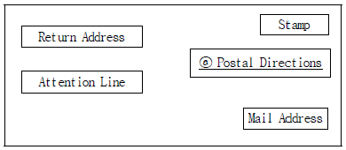
- CONFIDENTIAL
- REGISTERED MAIL
- PRINTED MATTER
- VIA AIR MAIL
(정답률: 26%)
47. According to the following letter, which of the followings is the most true?
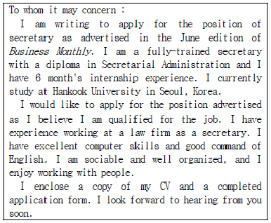
- The writer got the information of job opening from a magazine.
- The writer has job experience working at Business Monthly.
- The writer graduated from Hankook University six month ago.
- The writer is sending a copy of her cover letter and a completed application form.
(정답률: 29%)
48. Which of the followings is not the right correction for the underlined ⓐ, ⓑ, ⓒ and ⓓ?
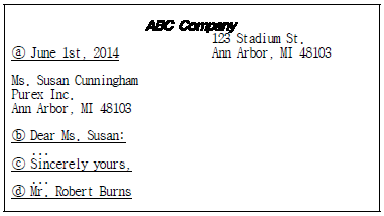
- ⓐ June 1st, 2014 → ⓐ June 1, 2014
- ⓑ Dear Ms. Susan: → ⓑ Dear Ms. Susan Cunningham:
- ⓒ Sincerely yours, → ⓒ Sincerely Yours,
- ⓓ Mr. Robert Burns → ⓓ Robert Burns
(정답률: 31%)
49. Read below Q&A conversation and choose one that does not match each other.
- A : How will you be paying for that?
B : With Visa. - A : Do you need your mini-bar restocked?
B : Yes, I need a wake-up call for 6:00 a.m. - A : What is your destination?
B : Toronto, Canada. - A : Have you flown with us before?
B : Yes, here is my frequent flyer number.
(정답률: 38%)
50. Referring to the following situation between A and B, choose one which is not appropriate expression in conversation below.
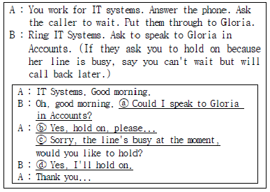
- ⓐCould I speak to Gloria in Accounts?
- ⓑYes, hold on, please...
- ⓒSorry, the line's busy at the moment,
- ⓓYes, I'll hold on.
(정답률: 38%)
51. Which of the followings is the most appropriate expression for the blank?
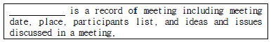
- Minutes
- Contract
- Agenda
- Report
(정답률: 31%)
52. Read the conversation below and choose one which is true.
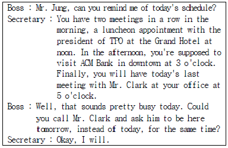
- Boss will have lunch at the office since he has busy schedule.
- The president of ACM bank will visit the Boss's office.
- Secretary will call Mr. Clark to reschedule the meeting time.
- Boss will have two meetings in the afternoon.
(정답률: 54%)
53. Read the following conversation and choose the most appropriate expressions for ⓐ and ⓑ considering the whole context of the conversation.
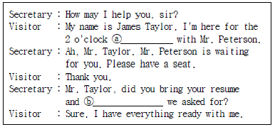
- business conference - cover letter
- job interview - cover letter
- board meeting - report
- sales presentation –report
(정답률: 51%)
54. Choose the wrong pair of abbreviation and its explanation.
- R.S.V.P. : Reply if you please
- etc. : and so on
- e.g. : in other words
- vs. : against
(정답률: 40%)
55. Read the following conversation and choose one which is not appropriate for the blank.
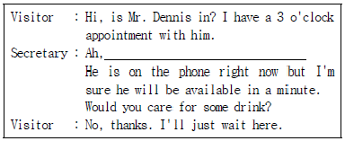
- You must be Ms. Spencer.
- I've been waiting for you, Ms. Spencer.
- I was expecting you, Mr. Spencer.
- You are supposed to make an appointment, Mr. Spencer.
(정답률: 40%)
56. Choose one which is the most appropriate for the blank.
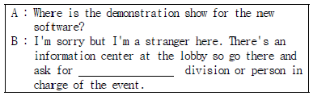
- Planning
- Public Relations
- Personnel
- Purchasing
(정답률: 24%)
57. Read the conversation and answer at least when the boss is supposed to leave the office for dinner.
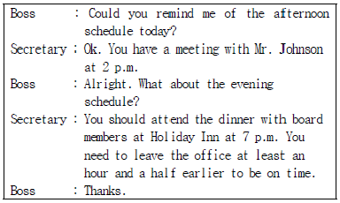
- 1:30 p.m.
- 5:30 p.m.
- 6:00 p.m.
- 6:30 p.m.
(정답률: 47%)
58. Read the following excerpts from e-mails and answer the question. Which of the followings is not appropriate subject line?
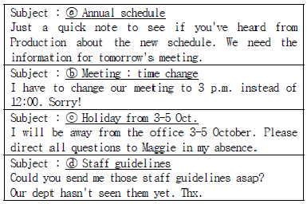
- ⓐ Annual schedule
- ⓑ Meeting : time change
- ⓒ Holiday from 3-5 Oct.
- ⓓ Staff guidelines
(정답률: 39%)
59. Choose one sentence which has a punctuation error.
- My assistant, Ms. Kelly Jung, will send the information.
- My father has been to three countries: Korea, Japan and Singapore.
- Ms. Park : our manager, is single.
- I use a computer often in the office; I like it.
(정답률: 41%)
4과목: 사무정보관리
60. 다음 비서의 업무 처리 중 소프트웨어 사용이 가장 부적절한 것은?
- 김비서는 상사의 출장보고서를 파워포인트로 작성하였다.
- 박비서는 계산이 필요한 거래명세서를 엑셀로 작성하였다.
- 장비서는 사내직원명부를 정리하기 위해 데이터베이스를 작성하였다.
- 서비서는 월별 매출달성현황 파악을 위해 엑셀을 사용하였다.
(정답률: 61%)
61. 요즘은 스팸문자, 메일이나 전화를 통한 보이스 피싱, 피해자를 사칭한 금융사기 등이 대표적으로 많이 발생한다. 이렇게 개인정보가 유출되어 각종 사기의 피해를 보는 일이 없도록 하려면 평소에 개인정보를 꼼꼼히 관리해야 한다. 다음 중 개인정보 유출을 막기 위해 실천하는 것으로 가장 적절하지 않은 것은?
- 비밀번호를 주기적으로 자주 변경한다.
- 비밀번호는 영문과 숫자, 기호 등을 조합하여 설정한다.
- PC방 등 공용 컴퓨터를 이용하여 금융거래를 하지 않는다.
- 문자메시지에 포함되어온 URL은 어떤 경우에도 클릭하지 않는다.
(정답률: 58%)
62. 다음 중 전자문서의 발송에 대한 설명으로 옳은 것으로만 짝지어진 것은?
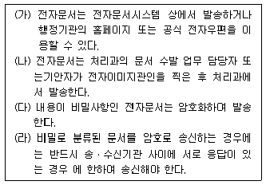
- (나), (다), (라)
- (가), (다), (라)
- (가), (나), (다)
- (가), (나), (다), (라)
(정답률: 37%)
63. 다음 중 문서의 성립 및 효력 발생에 대한 설명으로 가장 옳지 않은 것은?
- 문서는 당해 문서에 대한 서명에 의한 결재가 있음으로써 성립한다.
- 문서는 발신자가 문서를 발송함으로써 그 효력이 발생한다.
- 공고문서의 경우 특별한 규정이 없을 때, 공고가 있은 후 5일이 경과한 날부터 효력이 발생한다.
- 법규문서 중 법률ㆍ명령ㆍ조례ㆍ규칙은 공포일로부터 20일 경과 후 효력이 발생한다.
(정답률: 50%)
64. 김비서는 내방객 관리를 위해 MS-Access를 이용하여 데이터베이스를 만들고 있다. 다음 중 용어에 관한 설명으로 가장 적절하지 못한 것은?
- 보고서 : 데이터를 인쇄된 형식으로 나타나기 위해 사용하는 개체로서 정보를 사용자가 원하는 형식으로 출력할 수 있다.
- 매크로 : 레코드 수가 많거나 조건이 복잡할 경우 데이터를 효율적으로 관리할 수 있도록 하는 개체
- 테이블 : 데이터 관리를 기본으로 하는 Access에서 데이터를 저장하고 관리하는 규칙과 형식을 제공하는 개체
- 폼 : GUI 개념을 도입하여 결과물을 사용자가 사용하기 편하도록 비주얼하게 구성할 수 있도록 하는 개체
(정답률: 39%)
65. 경기도 안산에 있는 상록수물산에서 일하는 박비서의 문서 처리방법 중 가장 적절하지 못한 것은?
- 내일까지 부산지사에 문서가 도착하도록 오전 중에 특급 우편으로 발송하였다.
- 대표이사 앞으로 수신된 우편물을 문서 접수 대장에 기록한 후 전달하였다.
- 접수된 우편물은 모두 개봉한 후 배부하여 문서 처리를 신속하게 하였다.
- 2014년 1월 4일자 소인이 찍힌 우편물을 2월 1일에 받아서 봉투를 보관해두었다.
(정답률: 49%)
66. 다음 중 정보 수집 및 신문 스크랩을 위한 김비서의 행동으로 가장 적합하지 않은 것은?
- 일간지 외에도 여러 종류의 경제 신문을 구독하여 회사업무와 관련된 필요 내용을 스크랩한다.
- 상사는 김비서가 먼저 신문을 읽고 주요 기사가 눈에 띌 수 있도록 밑줄을 그어 두기를 원하여, 김비서는 큰 제목을 먼저 훑어보고 회사 관련 기사에 밑줄을 그어 놓는다.
- 상사가 스크랩을 원하는 기사는 몇 가지 주제로 분류하여, 출처별로 정리한다.
- 김비서는 매일 경조사, 인사 동정란을 살펴보고 화환을 보내거나 축전을 보낼 곳이 있으면 즉시 상사에게 보고 한다.
(정답률: 30%)
67. 다음 중 문서 정리의 대상이 되는 것으로만 짝지어진 것은?
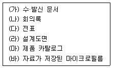
- (가), (나)
- (가), (나), (다)
- (가), (나), (마)
- (가), (나), (다), (라), (마), (바)
(정답률: 29%)
68. 부산에 위치한 상공산업 사장 비서는 광주에 있는 거래회사에 날인을 받기 위해 계약서 원본 2부를 발송하려고 한다. 이때 가장 올바르게 우편제도를 사용한 경우는?
- 계약서의 내용을 법적으로 증명할 수 있도록 배달증명으로 발송하였다.
- 통화우편을 이용한 발송으로 계약서 내용상의 금액을 분명하게 하였다.
- 일반우편물보다 빠른 전달과 등기우편취급을 위하여 특급우편으로 발송하였다.
- 요금별납제도를 이용하여, 해당 우편요금을 한 달 후에 납부하였다.
(정답률: 32%)
69. 다음 중 용어에 관한 설명으로 가장 적절하지 않은 것은?
- ERP : 기업의 경쟁력 강화를 위해서 분산되어 있던 각종자원을 서로 연결하고 공유하여 자원의 효율화를 꾀하기 위한 시스템이다.
- CALS : 제품의 발주·수주 및 구매 절차로부터 생산과 유통, 폐기까지 전 과정을 관리할 수 있는 정보체계이다.
- EC : 인터넷이라는 가상공간을 통해 소비자와 기업이 상품과 서비스를 사고파는 행위로, 일반적 상거래뿐만 아니라 고객 마케팅, 광고, 서비스를 포함하는 광범위한 개념이다.
- EDI : 네트워크상의 여러 서버에 분산되어 있는 텍스트, 그래픽, 이미지, 영상 등 모든 문서 자원을 발생부터 소멸까지 통합 관리해주는 문서관리 소프트웨어이다.
(정답률: 18%)
70. 다음 중 효과적인 프레젠테이션에 대한 설명으로 가장 거리가 먼 것은?
- 회의장의 크기를 고려하여 적당한 시각 기자재를 선정한다.
- 주제발표를 할 때에 주어진 예정 시간보다 약간 짧게 준비해 끝난 후 청중의 질문이나 피드백을 유도한다.
- 시각적 자료는 자세하게 가급적 많은 양을 준비하여 청중이 충분히 이해할 수 있게 도와준다.
- 프레젠테이션 장소에서 미리 리허설을 해보며 조명, 전원, 좌석 배치에 따른 문제점을 파악한다.
(정답률: 60%)
71. 컴퓨터 부품 수출회사에 다니고 있는 황비서는 아래의 해외 거래처와 주고받은 문서를 정리하고 있다. 이때 각 거래처 폴더의 순서가 가장 올바른 것은?
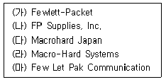
- (마) - (가) - (나) - (라) - (다)
- (나) - (마) - (가) - (라) - (다)
- (마) - (가) - (나) - (다) - (라)
- (가) - (나) - (마) - (다) - (라)
(정답률: 39%)
72. 아래에 보이는 오늘의 환율표에 의거하여 외환업무 처리에 대한 설명이 가장 적절하지 않은 것은?
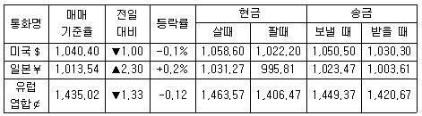
- 상사가 뉴욕출장 시 남은 달러를 오늘 원화로 환전하였는데, 어제 했던 것이 더 유리했다.
- 독일에서 유로화로 송금 받은 수출대금이 어제 원화로 환전되었는데, 오늘보다 유리하다.
- 상사의 오사카 출장을 위해서 어제 엔화 환전했는데, 오늘 환전하는 것보다 유리했다.
- 미국 회사에 어제 수입대금을 송금한 것이 오늘 송금하는 것보다 유리하다.
(정답률: 23%)
73. 다음은 인터넷 관련 용어에 대한 설명이다. 이 중 설명이 가장 적절하지 않은 것은?
- 풀(Pull)은 인터넷 사용자가 서버로부터 요청하여 받은 웹 페이지를 컴퓨터 화면에 보여주는 방식이다.
- 푸시(Push)는 인터넷 사용자가 요청하지 않은 정보를 서버가 보내는 것이다.
- 스미싱(Smishing)은 스마트폰 문자메시지를 통해 소액결제를 유도하는 피싱사기수법이다.
- 캐싱(Caching)은 인터넷 웹사이트의 방문기록을 남겨 사용자와 웹사이트 사이를 매개해주는 정보를 담은 파일이다.
(정답률: 43%)
74. 1GB에 달하는 신제품 홍보 동영상 데이터를 요청한 고객업체에 전달하려고 한다. 이중에서 가장 부적절한 전달 방법은?
- 대용량 메일보내기 서비스를 이용하여 첨부파일로 전송한다.
- USB에 담아 특급우편으로 전달한다.
- 분할압축 방식으로 작은 크기로 파일을 나누어 일반첨부 파일로 전송한다.
- 그룹웨어의 쪽지전송 서비스로 파일을 전송한다.
(정답률: 48%)
75. 다음 중 마비서의 공문서 처리 방법으로 가장 적절한 것은?
- 전결권자인 전무님이 출장으로 부재중이어서 직무대행자에게 대결을 받았다.
- 최종결재권자인 사장님이 부재중이어서 직무대행자에게 전결을 받았다.
- 최고결재권자인 사장님께서 사전에 전무님께 위임하였으므로 전무님께 대결 받았다.
- 정규결재절차에 따라 결재권자인 전무님까지 기안자인 노과장이 올린 기안을 결재 받았다.
(정답률: 40%)
76. 다음 중 같은 속성을 가진 소프트웨어로 짝지어지지 않은 것은?
- 한글 –훈민정음 - MS워드
- 포토샵 –일러스트레이터 - 코렐드로우
- 파워포인트 - 페인트샵 프로 - 한컴 슬라이드
- dBaseIV – 액세스 – SQL
(정답률: 41%)
77. 안비서는 상사와 관련된 사람들에 대한 정보를 파일로 만들어 두고 메일이나 연하장 등을 발송할 때 이 자료를 사용한다. 다음 중 메일머지 시 사용가능한 데이터 파일끼리 바르게 묶어진 것은 무엇인가?
- Outlook 주소록, *.pdf
- Outlook 주소록, *.dbf
- Outlook 주소록, *.pcx
- Outlook 주소록, *.dmb
(정답률: 48%)
78. 다음 그래프에 관한 내용 중 가장 거리가 먼 것은?
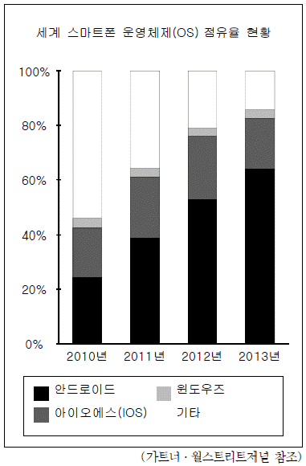
- 안드로이드는 2013년에 스마트폰 운영체제 점유율이 50%가 넘었다.
- 윈도우즈의 스마트폰 운영체제 점유율은 매년 거의 비슷한 비율을 보이고 있다.
- 이 그래프는 100%누적세로 막대그래프이며, 구성 비율을 시간의 추이에 따라 비교할 때 주로 사용한다.
- 2010년에는 기타 운영체제의 종류가 많았으나, 2013년에는 감소했다.
(정답률: 22%)
79. 다음 중 개방형 사무실 구조의 특징으로만 짝지어진 것은?
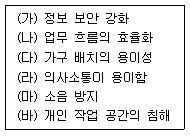
- (가), (나), (다), (라)
- (가), (다), (라), (마)
- (나), (다), (라), (마)
- (나), (다), (라), (바)
(정답률: 56%)